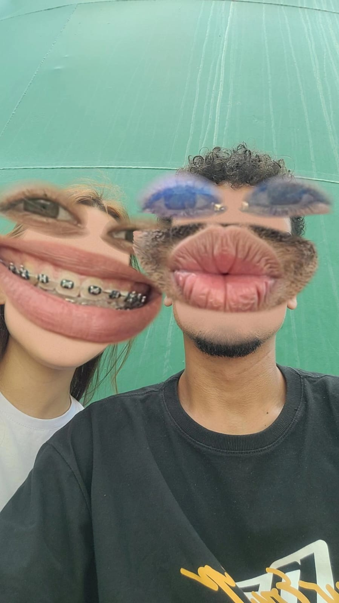

O Início de Tudo (oficialmente pro mundo pq nossa historia começou bem antes)
Naquela caixa d'agua que sempre vou lembrar que foi onde tomei coragem depois de muito tempo me protegendo e sem querer assumir alguem vi em voce a chance de ser diferente e ser feliz.
